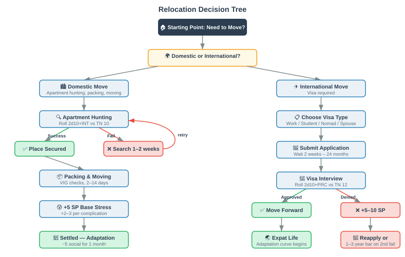
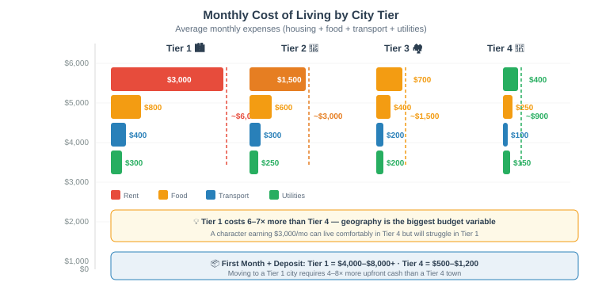
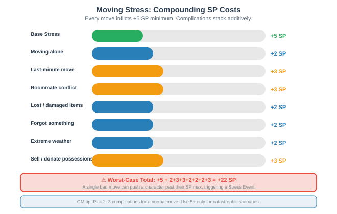
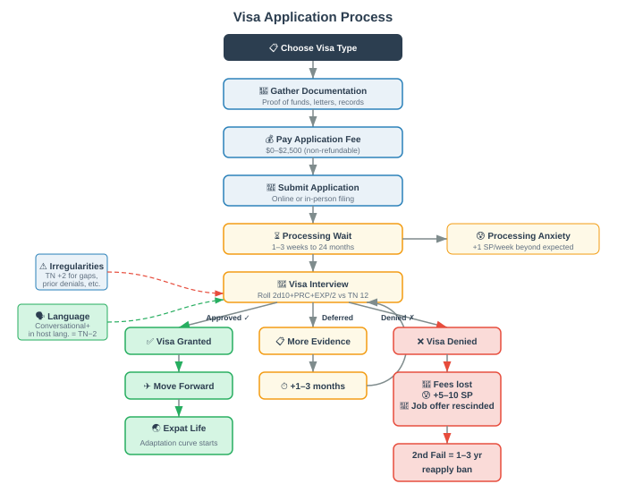
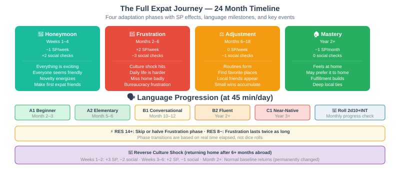
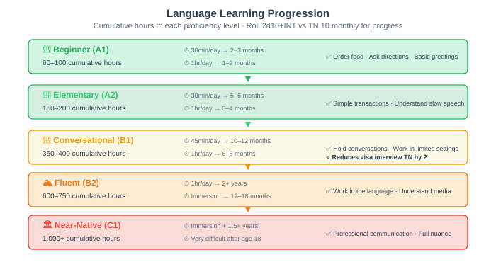
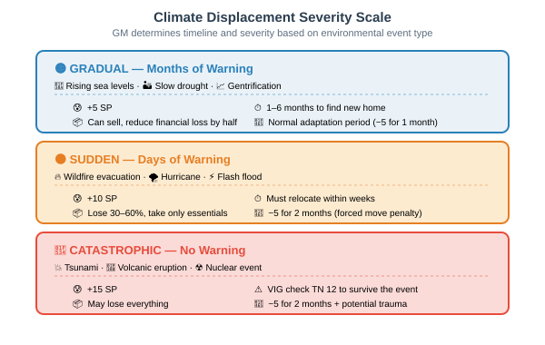
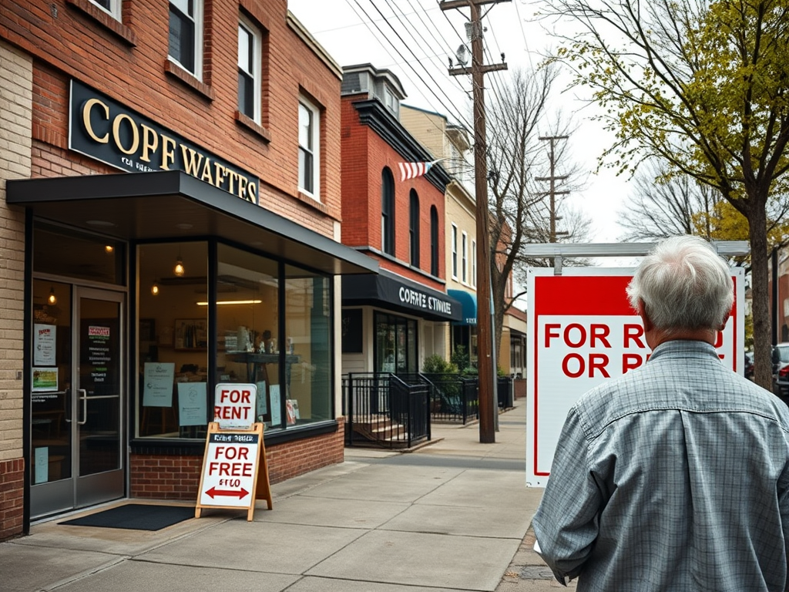
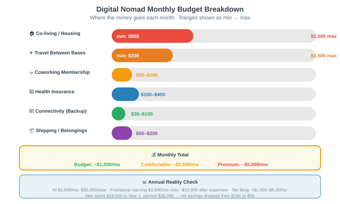

Moving, migrating, and building a life wherever you land. From apartment hunting to visa applications, diaspora communities to climate refugees — geography shapes everything.
In Reality RPG, where your character lives matters as much as who they are. Geography determines cost of living, weather exposure, social networks, career opportunities, and even mental health baseline. This page covers every aspect of geographic mobility — from a cross-town apartment move to emigrating to a new continent.
Every move — whether across the street or across the ocean — costs time, money, and Stress Points. The distance and complexity of the move scale all three costs. No move is free, and no move is instant.


Finding a new place to live is a full-time activity. In competitive markets, good units are rented within hours of listing. In slower markets, the search itself is a marathon of bad options.
Search: 2–6 weeks
App Fee: $100–$200
Deposit: 1–2× monthly rent
Total Move-In: $4,000–$8,000+
Search: 1–4 weeks
App Fee: $50–$150
Deposit: 1× monthly rent
Total Move-In: $2,000–$4,000
Search: 1–3 weeks
App Fee: $0–$75
Deposit: 1× monthly rent
Total Move-In: $800–$2,000
Search: 3 days–2 weeks
App Fee: $0–$50
Deposit: 1× monthly rent
Total Move-In: $500–$1,200
Landlords run credit checks. Your character's credit score determines their housing options:
Roll 2d10 + INT modifier vs TN 10 to successfully navigate the application process (filling out forms correctly, providing documentation, timing applications right). On a failure, the application is delayed 1–2 weeks or denied, and the character must restart the search at that property.
$100–$500 (gas, hotel) · 1–3 days · Best for studio/1BR, short distance
$300–$1,500 · 1–2 days · Best for 1–3BR, cross-country
$50–$200 (pizza, beer) · 1 day · Any size if friends are available
$1,000–$5,000+ · 1 day (they do the work) · Best for 3BR+, fragile items
$1,500–$4,000 · Flexible scheduling · Best for long distance, uncertain dates
Packing is not optional. Even with professional movers, someone has to pack boxes. The GM should track packing as a real time investment:
Each VIG check represents a day of heavy lifting. Failure means the character develops back pain (−2 to VIG for 1 week) or breaks something. Critical failure (double 1) means a broken appliance or damaged furniture worth $100–$1,000.
Life happens, and sometimes characters need to leave before their lease ends. Breaking a lease costs money and sometimes credit:
Roll 2d10 + PRC modifier vs TN 12 to negotiate a lease break with minimal penalty. On success, the landlord waives 50% of the penalty. On critical success (double 10), the lease is broken with no penalty at all — perhaps the landlord is relieved to get a better tenant.
Every move inflicts a minimum of +5 SP regardless of distance. The GM adds additional SP based on complications:

For the first month after moving to a new city, the character suffers a −5 penalty to all social checks. They don't know the area, don't know anyone, and feel like an outsider. This penalty decreases by 1 each subsequent month until it reaches 0 at 6 months, assuming the character makes at least one social connection per month. If isolated, the penalty never decreases and may worsen into loneliness (see Mental Health).
Maya, a 28-year-old graphic designer, is relocating from Columbus, Ohio to Austin, Texas for a new job. Here's how her move plays out:
Apartment hunting: Maya rolls 2d10 + INT mod = 7 + 2 = 9 vs TN 10. She fails by 1, meaning her first apartment choice falls through — the place she wanted gets rented before her application is processed. She has to settle for a slightly worse unit 15 minutes farther from her office.
Moving costs: Maya rents a U-Haul for 5 days: $890. She has a 2BR apartment, so she needs about 100 boxes. Packing takes her 6 days over two weekends. She rolls her VIG checks (VIG 10, mod 0): all three checks at TN 10 are successes, though she's exhausted.
Stress: Base +5 SP for moving. She moved alone (+2 SP). She forgot her favorite cookbook and had to mail it (+2 SP). Total: +9 SP. Maya's SP max is 20 + RES(12, +1) × 5 = 25. She goes from 3 SP to 12 SP — nearly half her stress capacity in one event.
Adaptation: For her first month in Austin, Maya has −5 to all social checks. She knows nobody. Her first week at the new job, she tries to bond with coworkers but rolls a 4 on her social check (even with the penalty). It takes her three weeks to have a meaningful connection with a coworker named Carlos.
Every country has its own immigration system, but the categories are roughly universal. The GM should adapt these to the specific destination country:
Cost: $500–$1,500
Processing: 2–6 months
Needs: Job offer, employer sponsorship
Duration: 1–3 years (renewable)
Cost: $350–$800
Processing: 4–12 weeks
Needs: Acceptance letter, proof of funds
Duration: Program length
Cost: $200–$1,000
Processing: 2–8 weeks
Needs: Remote job, $2K–$5K/mo income
Duration: 6–24 months
Cost: $500–$2,500
Processing: 6–24 months
Needs: Genuine relationship proof
Duration: 2 years (then PR)
Cost: $0–$400
Processing: 1–5 years
Needs: Fear of persecution
Duration: Indefinite (if granted)
Cost: $0
Processing: 6mo–2yr
Needs: UNHCR determination
Duration: Indefinite (if granted)
Cost: $0–$160
Processing: 1–3 weeks
Needs: Return ticket, proof of funds
Duration: 30–90 days

Most visa applications require an in-person interview. This is a social check with consequences:
Roll 2d10 + PRC modifier + EXP modifier (halved) vs TN 12. The GM may increase TN by 2 if the application has any irregularities (gaps in employment, previous visa denials, incomplete documentation). A failure means the visa is denied or deferred (requiring additional evidence, adding 1–3 months). Two failures in a row triggers a 1–3 year bar on reapplying.
Special rule: If the character has a language proficiency in the host country's language at Conversational level or above, reduce TN by 2.
A visa denial is not just a "try again" button. Real consequences:
Visa processing is the ultimate test of patience. During processing, the character is in limbo — they can't fully commit to the new location or the old one. The GM should track processing as real time passing in the game. During this period:

Research shows expats go through four distinct phases. In Reality RPG, each phase has mechanical effects:
The GM advances a character through phases based on real time elapsed, not dice rolls. However, a character with high RES (14+) may skip the Frustration phase or shorten it by half. A character with low RES (8 or below) may experience Frustration for twice as long.
Learning a new language is the single most impactful investment an expat can make. It takes real time and has measurable levels:

Every month, if the character has been studying consistently, roll 2d10 + INT modifier vs TN 10. On success, they accumulate language hours toward the next proficiency level. On failure, they plateau for that month (perhaps life got in the way, or motivation dropped). A character who speaks the language daily at work or school gets an automatic success each month.
Accent: Characters who begin language study after age 18 will likely retain an accent. This has no mechanical penalty but may affect social perceptions in some cultures (GM discretion).
Social connections are harder to build from zero, especially across language barriers:
Homesickness is a real SP drain. During the Frustration phase, characters who haven't maintained contact with home suffer +1 SP per week for homesickness. Characters who video call family weekly reduce this to +1 SP per month. Characters who have a strong support person (partner, close friend) in the new country may not suffer homesickness at all.
When characters return home after extended time abroad (6+ months), they experience reverse culture shock:
James, age 26, moves to Tokyo for a 2-year teaching position. Here's his expat journey:
Month 1 (Honeymoon): James is thrilled. Everything is novel. He gains −1 SP/week from the excitement. His social checks have +2 — everyone seems friendly. He makes an expat friend named Sarah at a welcome party.
Months 2–5 (Frustration): The reality hits. James can't read signs, can't order at restaurants, and the bureaucracy for setting up a bank account takes 3 visits over 2 weeks. He rolls 2d10 + PRC mod = 6 + 1 = 7 vs TN 12 to handle the bank situation — a failure. The teller is polite but unhelpful. James gains +2 SP/week from culture shock. He now has 14/25 SP (RES 11, no mod).
Language study: James commits to 45 minutes of Japanese study daily. At the end of Month 3, he rolls 2d10 + INT mod = 11 + 2 = 13 vs TN 10 — success! He's accumulating hours toward Conversational level. By Month 8, he reaches B1 and can hold basic conversations with Japanese colleagues.
Months 6–12 (Adjustment): James finds his rhythm. He discovers a local ramen shop he loves. He makes a Japanese friend through a language exchange. His social penalty drops to −1. SP stabilizes around 8/25.
Year 2 (Mastery): James now feels at home. He can navigate Tokyo without a map app. He's gained a Japanese colleague who invites him to their hometown. He gains −1 SP/month from the fulfillment of building a life here. When he returns to the US after 2 years, he experiences 2 weeks of reverse culture shock — his American friends seem loud and direct in a way that now bothers him.
The most common pathway for Americans abroad. Low barrier to entry, moderate pay, high cultural immersion:
Salary: $1,800–$2,800/mo
CoL: $800–$1,200/mo
Savings: $600–$1,500/mo
Housing: Company provided
Salary: $2,000–$4,000/mo
CoL: $1,000–$2,000/mo
Savings: $500–$2,000/mo
Housing: Varies by school
Salary: $800–$1,500/mo
CoL: $900–$1,500/mo
Savings: $0–$300/mo
Housing: Self-arranged
Salary: $600–$1,200/mo
CoL: $400–$700/mo
Savings: $200–$600/mo
Housing: Modest apartments
Salary: $3,000–$6,000/mo
CoL: $1,500–$3,000/mo
Savings: $1,000–$3,000/mo
Housing: Modern, tax-free
TEFL Certification: Requires a 120-hour course ($200–$600, can be done online in 2–4 weeks). Most countries require a bachelor's degree in any field. Roll 2d10 + INT modifier vs TN 8 to complete the TEFL course — failure means the character struggles with lesson planning and may be evaluated poorly.
High-pay, high-stress, temporary assignments (13 weeks typical). Requires an active nursing license:
When a company relocates an employee, the experience is dramatically different from self-initiated moves:
$5,000–$50,000 · Covers movers, travel, temporary housing
Varies · Some companies help find spouse employment
$2,000–$10,000 · Pre-departure orientation programs
$3,000–$15,000/year · Private tutoring or intensive courses
$500–$3,000/month · Company maintains storage or apartment
$10,000–$40,000/year · If children are involved
Corporate transfers reduce moving stress by 50% (minimum +2 SP instead of +5 SP) and skip the first month of the Frustration phase due to structured support.
The gray area of digital nomadism. Working remotely from another country raises legal and tax questions:
If a character works remotely from abroad on a tourist visa and is discovered (GM's call — perhaps a border check or a neighbor reports them), roll 2d10 + PRC modifier vs TN 14 to talk their way out of it. Failure means a fine ($500–$5,000), deportation, and a 1–5 year ban from re-entering the country. SP impact: +8 SP for the confrontation and +5 SP for the forced departure.
Cities worldwide have ethnic neighborhoods — Chinatown, Little Mexico, Koreatown, Little Ethiopia, Little India, and dozens more. Living in these communities has real mechanical effects:
−2 SP during adaptation phase
Character shares ethnicity with enclave
+1 to social checks within community
Always active
−1 SP/month (comfort food reduces stress)
Character can afford it
Language study TN reduced by 2
Heritage language matches enclave
+1 to job search rolls within community businesses
Always active
−10% to −20% on housing costs
Enclave is not gentrified
There are real downsides to concentrated ethnic neighborhoods:
−1 to social checks outside the community
Always (bias is real)
Job opportunities outside enclave −1 harder to find
Character lacks broader network
+1 SP/month from living stress
Enclave has high density
−1 to VIG checks (pollution, poor infrastructure)
Enclave is underserved
Rent increases of 15–40% over 3 years
Gentrifying enclave
Characters raised in diaspora communities or who move between cultures develop a bicultural identity. This has both strengths and tensions:
Bicultural characters can code-switch between cultural contexts. When interacting with someone from their heritage culture, they gain +2 to social checks. When interacting with someone from their adopted culture, they gain +2 to social checks. However, they may experience cultural identity stress: once per month, roll 2d10 + RES modifier vs TN 10. On failure, the character feels torn between cultures, gaining +2 SP from identity conflict.
Dating across cultures adds layers of complexity beyond standard social dynamics:
Effect: −2 to relationship building if families disapprove
Mitigation: Gradual introduction, cultural education
Effect: +1 SP/month from navigating conflicting norms
Mitigation: Open communication, compromise
Effect: −1 to intimacy checks if below Conversational
Mitigation: Language study, translation apps
Effect: +2 SP/month from separation
Mitigation: Regular video calls, visits
Effect: −1 to social checks (scheduling conflicts)
Mitigation: Flexibility, overlap hours
Effect: Variable (GM discretion based on severity)
Mitigation: Respect, compromise, or conversion
When one partner is a foreign national, marriage becomes a legal process:
International marriage agencies exist but raise serious ethical concerns. Exploitation, trafficking, and power imbalances are real risks. The GM should handle these situations with care:
Not all travel is tourism. Some characters choose extended travel as a life phase:
Regions: SE Asia, Latin America
Cost: $800–$1,500/mo
Duration: 3–12 months
SP: +3 initially, then −1 SP/mo
Growth: +2 EXP after 6 months
Cost: $1,000–$2,500/mo
Duration: 6–24 months
SP: +5 initially, variable ongoing
Growth: +1 EXP, +1 RES after 1 year
Cost: $2,000–$4,000/mo
Duration: 6–24 months
SP: +3 initially
Growth: +1 EXP after 6 months
Cost: $1,500–$4,000/mo
Duration: 12 months
SP: +4 initially, then −1 SP/mo
Growth: +2 EXP, +1 RES
Cost: $2,000–$5,000/mo (with aid: $500–$2,000)
Duration: 1–2 semesters
SP: +3 initially
Growth: +2 EXP, language progress
Structured volunteer programs offer meaningful experiences with built-in support:
Duration: 27 months
Pay: $100–$200/mo + housing
Needs: Citizen, 18+, clean background
SP: +5 initially, −2 SP/mo after
Duration: 10–14 months
Pay: $3,000–$5,000 + education award
Needs: Citizen, 17+
SP: +3 initially, −1 SP/mo
Duration: 6–12 months
Pay: $0–$2,000/mo
Needs: Medical license, experience
SP: +8 initially, variable ongoing
Duration: Flexible
Pay: Room + board only
Needs: None
SP: +2 initially, −1 SP/mo
Priya, 22, just graduated college with a degree in environmental science. Instead of taking a job, she decides on a gap year of travel. She has $8,000 saved and a backpack.
Planning phase (Month 0): Priya spends 2 weeks planning her route. She rolls 2d10 + INT mod = 9 + 3 = 12 vs TN 10 — success! Her itinerary is well-thought-out, and she books the first month of hostels at a discount. Total planning cost: $150 in advance bookings.
Initial stress: Leaving her life behind hits her. +4 SP for the gap year departure. She also says goodbye to her partner of 3 years, which adds +5 SP. Total: +9 SP. Priya's max SP is 20 + RES(14, +2) × 5 = 30. She goes from 5 SP to 14 SP.
Month 1–3 (Thailand, Vietnam): Backpacking at $1,000/month. The initial excitement wears off by Week 3, but Priya starts making friends in hostels. Each month, she gains −1 SP from the experience. By Month 3, she's at 11 SP.
Month 4–6 (Peru, Bolivia, Chile): Crossing the ocean costs $600 for the flight. In South America, she joins a volunteer program cleaning beaches for 3 weeks. This gives her a meaningful experience but is physically demanding — she rolls 2d10 + VIG mod = 5 + 1 = 6 vs TN 8. Failure! She gets a mild knee injury that slows her down for 2 weeks (+2 SP from frustration).
Month 7–12 (Europe): Priya stretches her budget. She works as an au pair in France for 3 months (room, board, and €300/month pocket money). This covers her expenses and even adds $600 to her savings. By Month 12, she has +2 EXP from the travel experience and +1 RES from overcoming challenges. Her SP is down to 7 — she's actually happier than when she left.
Return home: Reverse culture shock hits for 2 weeks (+3 SP). But Priya now has stories, confidence, and a clearer sense of what she wants from her career. She gets a job in environmental consulting — her EXP bonus from travel helps her interview.
Climate change is not a future problem — it's a present one. Characters may be forced to relocate due to environmental factors:
Regions: Coastal cities, island nations
Timeline: 2030–2100 (accelerating)
Severity: Slow onset, eventual catastrophe
Regions: Desert regions, urban heat islands
Timeline: Already happening
Severity: Seasonal, worsening
Regions: California, Sahel, Australia
Timeline: Already happening
Severity: Multi-year cycles
Regions: Western US, Mediterranean, Australia
Timeline: Seasonal, increasing
Severity: Sudden displacement
Regions: Caribbean, Gulf Coast, SE Asia
Timeline: Seasonal, increasing intensity
Severity: Sudden, catastrophic

The term "climate refugee" is not recognized in international law, which creates a legal gray zone for displaced people:
When a character is forced to move due to environmental factors, the GM determines the timeline:
In all cases, the character must find a new home within 1–6 months depending on severity. No new city adaptation period applies — the move is forced, not chosen, so the social penalty is −5 for the first 2 months (longer than a voluntary move).

Not all displacement is environmental. Gentrification forces long-term residents out of their neighborhoods through rising costs:
Characters displaced by gentrification gain +3 SP/month during the displacement process and suffer a −1 penalty to social checks in their new (often less familiar) neighborhood for 3 months.
Working remotely while traveling the world is the dream for many — but the reality has constraints:
Shared housing with workspaces, community events
$800–$2,500/month
Dedicated workspace, reliable internet, networking
$50–$300/month
Flights every 1–3 months
$200–$1,500 per trip
Local SIM, portable WiFi, satellite backup
$30–$100/month
International/travel insurance
$100–$400/month
Forwarding address, storage, shipping
$50–$200/month

Co-living is the backbone of digital nomad life. These spaces provide:
Digital nomads struggle with deep connections. Each month at a new location, roll 2d10 + PRC modifier vs TN 10 to form at least one meaningful connection. On failure, the character feels isolated (+1 SP). On success, they have a local contact for recommendations, support, or friendship. On critical success (double 10), they find a travel companion for the next leg of their journey.
This is the #1 headache for digital nomads:
The most critical survival concern for a remote worker. Without internet, the character cannot work:
If the character's internet goes down during a critical work period (presentation, deadline, client call), roll 2d10 + DXT modifier vs TN 10 to mitigate the damage. On success, the character finds an alternative (coffee shop, coworking space, mobile hotspot) and loses no work. On failure, the character misses the deadline or disappoints the client. Consequences: −$500–$5,000 in lost income or a damaged professional relationship. SP impact: +3 SP for the stress of the emergency.
Alex, 31, is a software developer who quit their office job to work remotely. They have $15,000 in savings and a laptop.
Month 1–3 (Bali, Indonesia): Alex rents a co-living space for $1,200/month. Internet is decent (95% reliability). Alex rolls community building: 2d10 + PRC mod = 8 vs TN 10 — failure. Alex feels lonely the first month (+1 SP). In Month 2, they attend a coworking event and finally connect with a fellow nomad named Luca. By Month 3, Alex has a small circle of 3 nomad friends.
Month 4 (Internet crisis): Alex has a major client presentation. The WiFi goes down 20 minutes before. Alex rolls 2d10 + DXT mod = 4 + 1 = 5 vs TN 10 — failure! Alex can't find a backup connection in time. The client is disappointed. Alex loses a $2,000 project. SP goes up by +3. Alex now has 8/25 SP.
Month 5–8 (Lisbon, Portugal): Alex moves to Europe. Co-living at €1,400/month. Better internet (99% reliability). Alex applies for a Digital Nomad Visa — rolls 2d10 + PRC mod + EXP(+1) = 11 vs TN 12 — close! The visa is approved with a request for additional documentation, adding 2 weeks but no denial. Alex is now legal.
Month 9–12 (Mexico City): Alex moves again. Cheaper cost of living ($1,000/month). Alex has been traveling for a year and has +1 EXP from navigating different cultures. However, the constant movement takes a toll — Alex rolls 2d10 + RES mod = 7 + 1 = 8 vs TN 10 to check for burnout. Failure. Alex starts experiencing mild burnout symptoms: difficulty sleeping, irritability. The GM notes this and may escalate if Alex doesn't take a break.
Year-end assessment: Alex spent ~$18,000 on living costs and travel. Earned ~$28,000 from freelance work. Net savings: ~$5,000 (down from $15,000). But Alex gained experience, language skills (conversational Spanish), and a global network. Was it worth it? Alex decides to stay nomadic another 6 months before settling down.
Cost: $500–$3,000
SP: +5 min · Time: 1 week
Risk: Bad landlord, hidden fees
Cost: $1,000–$5,000
SP: +5 min · Time: 2–4 weeks
Risk: Lost items, adaptation period
Cost: $1,500–$15,000
SP: +8 min · Time: 3–12 months
Risk: Visa denial, culture shock
Cost: $0–$5,000
SP: +15 min · Time: 6mo–5yr
Risk: Denial, detention, trauma
Cost: $0–$20,000+
SP: +5–15 · Time: Days to years
Risk: Loss of everything
Cost: $12,000–$40,000
SP: +3/mo · Time: 12 months
Risk: Burnout, visa issues, isolation
Don't treat geography as a static backdrop. Where a character lives should change their story. A character who moves from a small town to a megacity will have a different arc than one who stays put. Use the adaptation mechanics, cultural friction, and SP costs to make geography feel alive and consequential. The best reality RPG campaigns are about people becoming who they need to be in the places they find themselves.